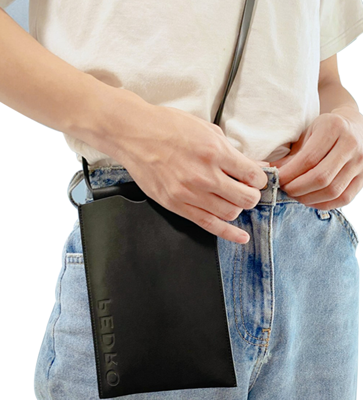
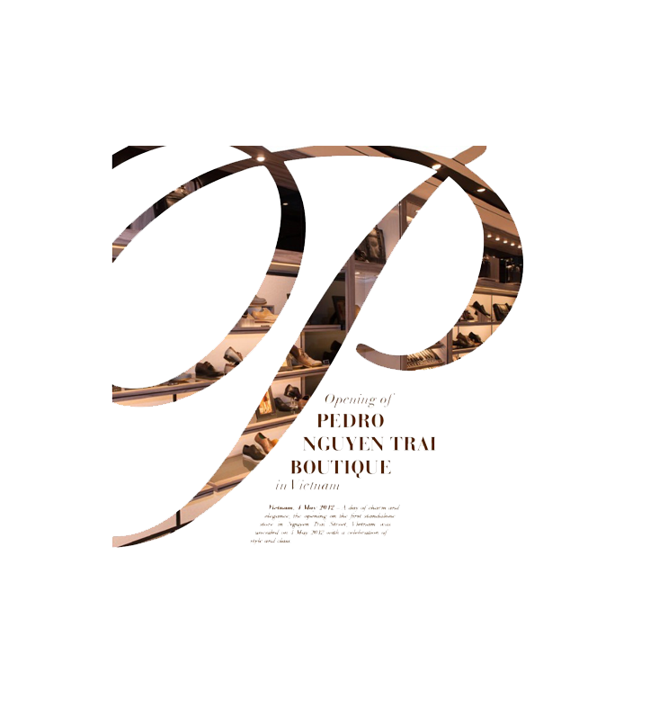

PEDRO

THE NEW COLECTION
Elegant & Luxury
BEST SELLEAS
ONLY WEEK
lưng nam Reversible Leather


DIOR COLLECTION
Spring Look Book
NEW STORE
OPENING OF PEDRO NGUYEN TRAI, VIETNAM BOUTIQUE
4 May 2012
A day of charm and elegance, the opening of the first standalone store in NGUYEN TRAI
street, vietnam was unveiled on 4th may 2012 with a celebration of style and class.
The event was graced by top celebrities and high-profiler including Dam Vinh Hung, Tran
Thanh, Trang Nhung, Ngoc Diep, Ngoc Quyen and Hoang Yen. Guests were not only treated
with stardom of action but also the captivating latest collection in store.
The Nguyen Trai Store is situated at the centre part of the bustling and busy town where many
luxury fashion boutiques are sited. The 2 story high store encompassed an area of 1580
square feet holding a huge range of both the men's and women's collection.
The store is notable for its sense of modern luxury; exhibiting the aired of sophistication and
elegance in the design scheme of greys and black which truly puts the Pedro's fashion at
centre stage.
The launching of the standalone store has moved the brand one step forward in the
expansion in Vietnam, totaling the number of stores to 41 stores across the globe. Embrace in
an all new shopping experience with Pedro now at 37 Nguyen Trai Street, District 1.